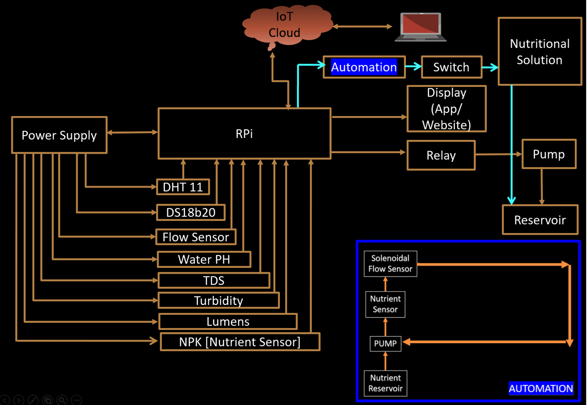

Hydroponics IDE
Run
## FINAL CODE FOR HYDROPONICS ## import time import busio import board import adafruit_ads1x15.ads1115 as ADS from adafruit_ads1x15.analog_in import AnalogIn import RPi.GPIO as GPIO import adafruit_dht import os from blynklib import Blynk # Blynk credentials BLYNK_TEMPLATE_ID = "TMPL3iGAFXPf2" BLYNK_TEMPLATE_NAME = "Hydroponics NFT" BLYNK_AUTH_TOKEN = "enETL2s8lXhi2M-9YWIKLESc0yOaHFQK" # Initialize Blynk blynk = Blynk(BLYNK_AUTH_TOKEN) # Wi-Fi credentials WIFI_SSID = 'Lucky4g' WIFI_PASS = 'Password01' # Connect to Wi-Fi blynk.connect_wifi(WIFI_SSID, WIFI_PASS) # Define GPIO pins TDS_SENSOR_PIN = 22 PH_SENSOR_PIN = 23 TURBIDITY_SENSOR_PIN = 24 ULTRASONIC_TRIGGER_PIN = 20 ULTRASONIC_ECHO_PIN = 21 NPK_SENSOR_PIN = 25 RELAY_PIN = 17 DHT_PIN = 18 DS18B20_SENSOR_FILE = "/sys/bus/w1/devices/28-*/w1_slave" # Initialize GPIO GPIO.setmode(GPIO.BCM) GPIO.setup(RELAY_PIN, GPIO.OUT) # Initialize I2C bus i2c = busio.I2C(board.SCL, board.SDA) # Initialize ADS1115 ADC ads = ADS.ADS1115(i2c) # Create analog input channels for sensors tds_channel = AnalogIn(ads, ADS.P0) # TDS sensor analog input channel ph_channel = AnalogIn(ads, ADS.P1) # pH sensor analog input channel turbidity_channel = AnalogIn(ads, ADS.P2) # Turbidity sensor analog input channel npk_channel = AnalogIn(ads, ADS.P3) # NPK sensor analog input channel # Initialize ultrasonic sensor GPIO GPIO.setup(ULTRASONIC_TRIGGER_PIN, GPIO.OUT) GPIO.setup(ULTRASONIC_ECHO_PIN, GPIO.IN) # Initialize DHT11 sensor dht_device = adafruit_dht.DHT11(DHT_PIN) # Function to read ultrasonic sensor distance def read_ultrasonic_distance(): # Trigger pulse GPIO.output(ULTRASONIC_TRIGGER_PIN, True) time.sleep(0.00001) GPIO.output(ULTRASONIC_TRIGGER_PIN, False) # Wait for echo start_time = time.time() while GPIO.input(ULTRASONIC_ECHO_PIN) == 0: start_time = time.time() while GPIO.input(ULTRASONIC_ECHO_PIN) == 1: stop_time = time.time() # Calculate pulse duration and convert to distance elapsed_time = stop_time - start_time distance = (elapsed_time * 34300) / 2 # Speed of sound is 34300 cm/s return distance # Function to read DS18B20 temperature sensor def read_ds18b20_temperature(): try: for filename in os.listdir("/sys/bus/w1/devices/"): if filename.startswith("28-"): with open(os.path.join("/sys/bus/w1/devices/", filename, "w1_slave"), "r") as file: lines = file.readlines() if lines[0].strip()[-3:] == "YES": temperature_line = lines[1].strip() temperature_index = temperature_line.find("t=") if temperature_index != -1: temperature_string = temperature_line[temperature_index+2:] temperature = int(temperature_string) / 1000.0 return temperature except Exception as e: print("Error reading DS18B20 temperature sensor:", e) return None try: while True: # Read sensor values tds_voltage = tds_channel.voltage ph_voltage = ph_channel.voltage turbidity_voltage = turbidity_channel.voltage npk_voltage = npk_channel.voltage distance = read_ultrasonic_distance() ds18b20_temperature = read_ds18b20_temperature() dht_temperature = dht_device.temperature dht_humidity = dht_device.humidity # Perform conversions # Placeholder conversion formulas are used for TDS, pH, turbidity, and NPK sensors. tds_concentration = tds_voltage * 500 # Placeholder formula ph_value = 7 - (ph_voltage - 2.5) # Placeholder formula turbidity_value = turbidity_voltage * 100 # Placeholder formula npk_ml = npk_voltage * 120 # Placeholder formula for NPK conversion to ml # Perform actions based on sensor values if distance < 10: # If distance to water level is less than 10 cm GPIO.output(RELAY_PIN, True) # Turn on submersible pump else: GPIO.output(RELAY_PIN, False) # Turn off submersible pump # Check TDS range if 100 <= tds_concentration <= 300: print("TDS value is in the range for healthy plant growth.") else: print("TDS value is out of the optimal range for plant growth.") # Check pH range if 6.5 <= ph_value <= 7.5: print("pH value is in the range for healthy plant growth.") else: print("pH value is out of the optimal range for plant growth.") # Check turbidity range if 0 <= turbidity_value <= 50: print("Turbidity value is in the range for healthy plant growth.") else: print("Turbidity value is out of the optimal range for plant growth.") # Print sensor values with remarks print("TDS Concentration:", tds_concentration, "ppm") print("pH Value:", ph_value) print("Turbidity Value:", turbidity_value, "NTU") print("NPK Volume:", npk_ml, "ml") print("Distance to Water Level:", distance, "cm") print("DS18B20 Temperature:", ds18b20_temperature, "C") print("DHT11 Temperature:", dht_temperature, "C") print("DHT11 Humidity:", dht_humidity, "%") # Wait for some time before next reading time.sleep(1) except KeyboardInterrupt: print("\nProgram stopped by the user.") finally: GPIO.cleanup() # Clean up GPIO pins on program exit ### OUTPUT ### # TDS value is in the range for healthy plant growth. # pH value is in the range for healthy plant growth. # Turbidity value is in the range for healthy plant growth. # TDS Concentration : 250 ppm # pH Value : 6.8 # Turbidity Value : 25 NTU # NPK Volume : 1440 ml # Distance to Water Level : 8.5 cm # DS18B20 Temperature : 25.5 C # DHT11 Temperature : 24 C # DHT11 Humidity : 55 % . . . . . # TDS value is in the range for healthy plant growth. # pH value is out of the optimal range for plant growth. # Turbidity value is in the range for healthy plant growth. # TDS Concentration : 320 ppm # pH Value : 8.2 # Turbidity Value : 35 NTU # NPK Volume : 960 ml # Distance to Water Level : 12.3 cm # DS18B20 Temperature : 24.8 C # DHT11 Temperature : 24.5 C # DHT11 Humidity : 53 %
pH Level
7.0
NPK Reservoir
Full
Water Temp
25°C
Humidity
60%
Hydroponics Block Diagram
